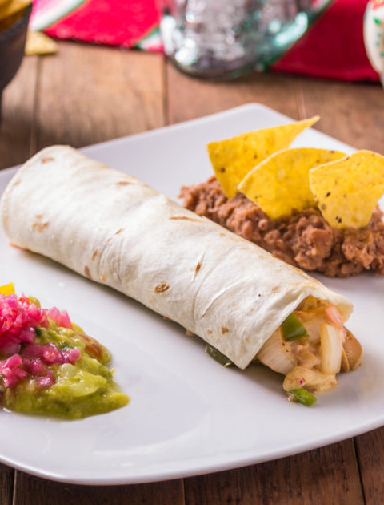
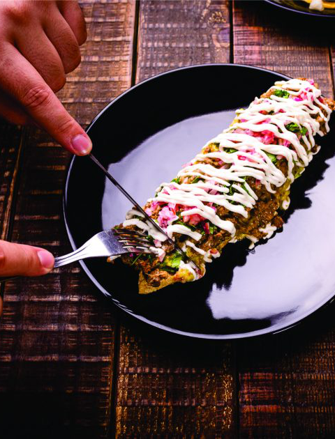

Pratos diversificados e variados da gastronomia mexicana
Tortilla de milho crocante (taco shell) recheada com proteína de soja refogada
com
cubinhos de berinjela e abobrinha, servido com alface e com ou sem sour cream.
Tostitacos
28.96 R$
Tortillas de milho crocante (formato shell) recheada com carne moída, bacon,
cebola
e
milho verde, tudo isto é refogado e flambado na wok e por fim misturado com grãos de feijão preto.
Coberto com alface e
adereço especial de chipotle. Porção de três unidades acompanha porção pequena de nachos guacamole
e
chilibeans.
Tostitacos de Carne
28.96 R$
Tortilla de milho em formato redondo, recheada com uma leve camada de pasta de feijão, picadillo de
proteína de soja,
temperada e refogada com especiarias, molho de tomate natural, abobrinha e cenoura em cubinhos
levemente picantes.
Tostada Vegatariana
26.96 R$
Tortilla de milho em formato redondo, com uma leve camada de pasta de feijão e
cobertas de tinga (frango desfiado com
cebola temperado com chipotle) creme de leite e queijo.
Tostada de Tinga
26.96 R$
Tortilla de milho em formato redondo, com uma leve camada de pasta de feijão e cobertas com
picadillo (carne moída,
tomate batata em pedaços levemente apimentada) creme leite e queijo.
Tostada de Picadillo
26.96 R$
Filetes de lombo suíno previamente marinados com especiarias mexicanas, assado ao calor das brasas
lentamente no espeto
na posição vertical e servido em tortillas de milho, cobertos com uma porção leve de coentro, cebola
e abacaxi. Porção
de quatro unidades.
Tacos al Pastor
25.96 R$
Tortilla de trigo recheada com Tomate, champignon, cebola, coentro e cebola roxa temperada.
Taco Sinaloense Vegetariano
28.96 R$

Tortilla de trigo recheada com frango, queijo, champignon e cebola roxa temperada. Acompanha uma
porção pequena de
nachos, guacamole e chillibeans.
Taco Sinaloense de Frango
25.96 R$
Tortilla de trigo recheada com filé de carne bovina, queijo, champignon e cebola roxa temperada.
Acompanha uma porção
pequena de nachos, guacamole e chillibeans.
Taco Sinaloense de Carne
25.96 R$
Duas tortillas de trigo recheadas com queijo mussarela, cogumelo, coentro e milho. Acompanha uma
porção pequena de
nachos, guacamole e chillibeans.
Quesadilha Vegetariana
28.96 R$
Duas tortillas de trigo recheadas com queijo mussarela. Acompanha uma porção pequena de nachos,
guacamole e chillibeans.
Quesadilha de Queijo
28.96 R$
Duas tortillas de trigo recheadas com queijo e frango desfiado temperado. Acompanha uma porção
pequena de nachos,
guacamole e chillibeans.
Quesadilha de Frango
28.96 R$
Duas tortillas de trigo recheadas com queijo e carne bovina desfiada e temperada. Acompanha uma
porção pequena de nachos,
guacamole e chillibeans.
Quesadilla de Carne
28.96 R$
Salgadinhos crocantes feitos de milho em formato triangular. Acompanha guacamole (molho feito com
abacate) e frijoles
refritos (feijão amassado temperado com pimenta e calabresa defumada).
Nachos
28.96 R$
T
Shitake fatiado com cebola, pimentão vermelho, cubinhos de abobrinha e palmito grelhados com o
tempero da casa, servido
em uma pedra vulcânica estupidamente quente. Acompanha seis tortillas de trigo ou milho. *Opção
com queijo e sem queijo.
Molcajete Vegetariano
49.96 R$
Cubinhos de alcatra e filé de frango grelhados com cebola, pimentão e queijo granado. Tudo isto é
servido em uma pedra
vulcânica estupidamente quente. Acompanha seis tortillas de trigo, guacamole e frijoles refritos.
Porção para 3 pessoas.
Molcajete Tradicional
49.96 R$
Tortilla de milho crocante enrolada e recheada de frango desfiado temperado, com cobertura de creme
de leite, guacamole e
queijo. Acompanha uma porção extra pequena de nachos, guacamole e chillibeans.
Flautas
28.96 R$
Tortilha de milho crocante enrolada e recheada com batata amassada, temperada com cheiro verde,
cebola e lascas de
azeitona . *Opção com cobertura de sour cream e queijo.
Flautas de Papa
28.96 R$
Três tortillas recheadas com frango, coberta com molho verde (tomate verde e jalapeños), creme de
leite, cebola, queijo
e gergelim. Acompanha uma porção pequena de nachos, guacamole e chillibeans.
Enchilada
15.96 R$
Tortilla de trigo (em formato wraps) recheada de pasta de feijão, queijo, tomate, cebola e
pimentão. Acompanha uma
porção pequena de nachos, guacamole e chillibeans.
Burrito Vegetariano
28.96 R$
Tortilla de trigo em formato wraps recheada com shimeji fatiado e cebola roxa temperada, com um
leve toque de shoyo e
tempero da casa. *Opção com queijo e sem queijo.
Burrito de Shimeji
28.96 R$
Tortilla de trigo (em formato wraps) recheada de pasta de feijão, queijo, frango desfiado e
temperado levemente
apimentado. Acompanha uma porção pequena de nachos, guacamole e chillibeans.
Burrito de Frango
28.96 R$
Tortilla de trigo (em formato wraps) recheada de pasta de feijão, queijo, carne bovina desfiada e
temperada. Acompanha
uma porção pequena de nachos, guacamole e chillibeans.
Burrito de Carne
28.96 R$
Igredientes típicos da iguaria mexicana

Massa de milho crocante, recheada com feijão temperado, coberto com guacamole, carne al pastor,
queijo gratinado,
pedacinhos de abacaxi grelhado, cebola roxa temperada e uma pitada de coentro.
Tlacoyos de Gringa
28.96 R$
Massa de milho crocante, recheada com feijão temperado, coberto com guacamole, pedacinhos de alcatra
grelhada, queijo
gratinado, cebola roxa temperada, creme de leite e uma pitada de coentro.
Tlacoyo de Bistec
28.96 R$
Pururucas de suíno ao molho de pimenta jalapeño, Porção de 2 unidades. Acompanha uma porção extra
pequena de nachos,
guacamole e chillibeans.
Taco de Chicharrón en salsa verde
28.96 R$
Carne suína preparada e maturada por 4 horas, cozida num tacho de cobre do jeito “michoacano”,
acompanhado de cebola,
coentro e molho de pimenta. Acompanha uma porção pequena de nachos, guacamole e chillibeans.
Taco de Carnitas
28.96 R$
Tortillas pequenas de milho, recheadas com pedacinhos de carne bovina, cebola roxa temperada e
coentro. Porção de quatro
unidades. Acompanhamentos: limão, guacamole (porcão pequena) ou salsa mexicana (porcão pequena).
Taco de Bistec sem queijo
28.96 R$
Tortillas pequenas de milho, recheadas com pedacinhos de carne bovina, queijo granado, cebola roxa
temperada e coentro.
Porção de quatro unidades. Acompanhamentos: limão, guacamole (porcão pequena) ou salsa mexicana
(porção pequena).
Taco de Bistec com queijo
28.96 R$
Tortillas de milho recheadas de frango desfiado, cobertas de mole oaxaqueño, creme de leite, gergelim
e queijo.
Enchiladas de Mole Oaxaqueño
29.96 R$
Caldo de frango com legumes, pimenta chipotle, queijo, cebola e coentro.
Caldo Tlalpeño
26.96 R$
Divirta-se e refreque-se
Paloma Blanca
24.96 R$
Mojito
16.00 R$
Michelada Cubana
16.00 R$
Michelada Clássica
15.00 R$
Matador
25.96 R$
Margarita Tradicional
27.96 R$
Margarita Cuervo Frozen
25.96 R$
José Cuervo Sunrise
25.96 R$
Helado Borracho
25.96 R$
Charro Negro
25.96 R$
Cerveja Long Neck Corona
13.00 R$
Água de Tamarindo
15.96 R$
Água de Jamaica
15.96 R$
Confira o carpádio para entrega rápida
Filetes de lombo suíno previamente marinados com especiarias mexicanas, assado ao calor das brasas
lentamente no espeto
na posição vertical e servido em tortillas de milho, cobertos com uma porção leve de coentro, cebola
e abacaxi. Porção
de quatro unidades.
Tacos al Pastor
25.96 R$
Tortilla de trigo recheada com frango, queijo, champignon e cebola roxa temperada. Acompanha uma
porção pequena de
nachos, guacamole e chillibeans.
Taco Sinaloense de Frango
25.96 R$
Tortilla de trigo recheada com filé de carne bovina, queijo, champignon e cebola roxa temperada.
Acompanha uma porção
pequena de nachos, guacamole e chillibeans.
Taco Sinaloense de Carne
25.96 R$
Tortillas pequenas de milho, recheadas com pedacinhos de carne bovina, cebola roxa temperada e
coentro. Porção de quatro
unidades. Acompanhamentos: limão, guacamole (porcão pequena) ou salsa mexicana (porcão pequena).
Taco de Bistec sem queijo
28.96 R$
Tortillas pequenas de milho, recheadas com pedacinhos de carne bovina, queijo granado, cebola roxa
temperada e coentro.
Porção de quatro unidades. Acompanhamentos: limão, guacamole (porcão pequena) ou salsa mexicana
(porção pequena).
Taco de Bistec com queijo
28.96 R$
Duas tortillas de trigo recheadas com queijo mussarela, cogumelo, coentro e milho. Acompanha uma
porção pequena de
nachos, guacamole e chillibeans.
Quesadilha Vegetariana
28.96 R$
Duas tortillas de trigo recheadas com queijo mussarela. Acompanha uma porção pequena de nachos,
guacamole e chillibeans.
Quesadilha de Queijo
28.96 R$
Duas tortillas de trigo recheadas com queijo e frango desfiado temperado. Acompanha uma porção
pequena de nachos,
guacamole e chillibeans.
Quesadilha de Frango
28.96 R$
Duas tortillas de trigo recheadas com queijo e carne bovina desfiada e temperada. Acompanha uma
porção pequena de nachos,
guacamole e chillibeans.
Quesadilla de Carne
28.96 R$
Salgadinhos crocantes feitos de milho em formato triangular. Acompanha guacamole (molho feito com
abacate) e frijoles
refritos (feijão amassado temperado com pimenta e calabresa defumada).
Nachos
28.96 R$
Tortilla de milho crocante enrolada e recheada de frango desfiado temperado, com cobertura de creme
de leite, guacamole e
queijo. Acompanha uma porção extra pequena de nachos, guacamole e chillibeans.
Flautas
28.96 R$
Tortilha de milho crocante enrolada e recheada com batata amassada, temperada com cheiro verde,
cebola e lascas de
azeitona . *Opção com cobertura de sour cream e queijo.
Flautas de Papa
28.96 R$
Churros com recheio de doce de leite ou nutella com uma camada de granulado de chocolate ou
castanha
de caju.
Churros
8.00 R$
Cerveja Long Neck Corona
13.00 R$
Tortilla de trigo em formato wraps recheada com shimeji fatiado e cebola roxa temperada, com um
leve toque de shoyo e
tempero da casa. *Opção com queijo e sem queijo.
Burrito de Shimeji
28.96 R$
Tortilla de trigo (em formato wraps) recheada de pasta de feijão, queijo, frango desfiado e
temperado levemente
apimentado. Acompanha uma porção pequena de nachos, guacamole e chillibeans.
Burrito de Frango
28.96 R$
Tortilla de trigo (em formato wraps) recheada de pasta de feijão, queijo, carne bovina desfiada e
temperada. Acompanha
uma porção pequena de nachos, guacamole e chillibeans.